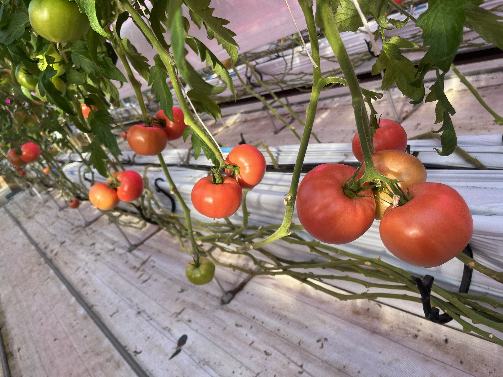
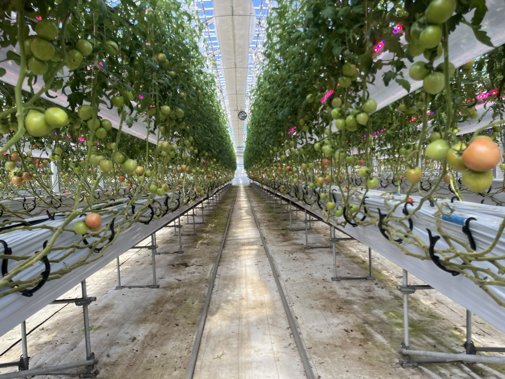
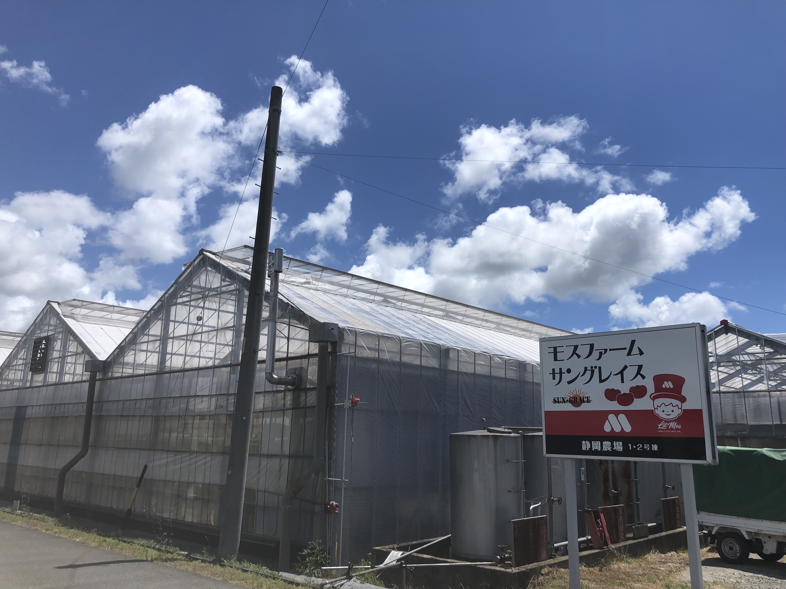
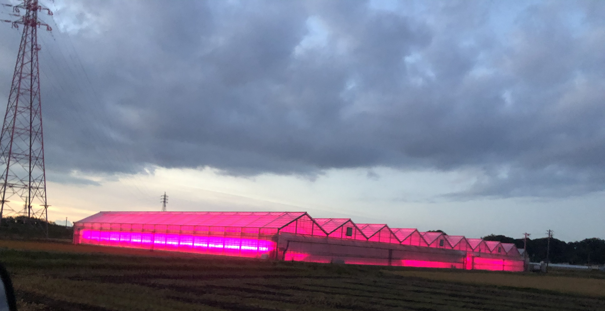
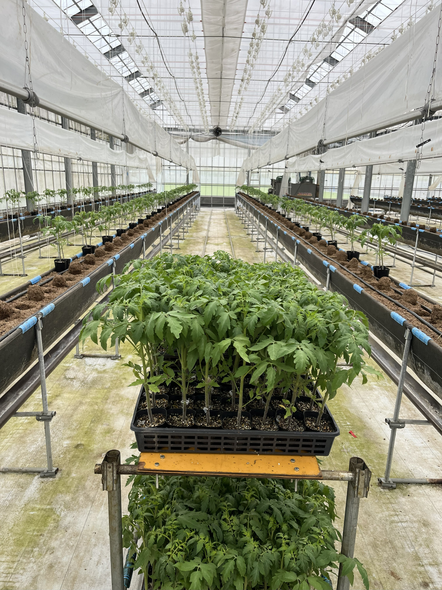
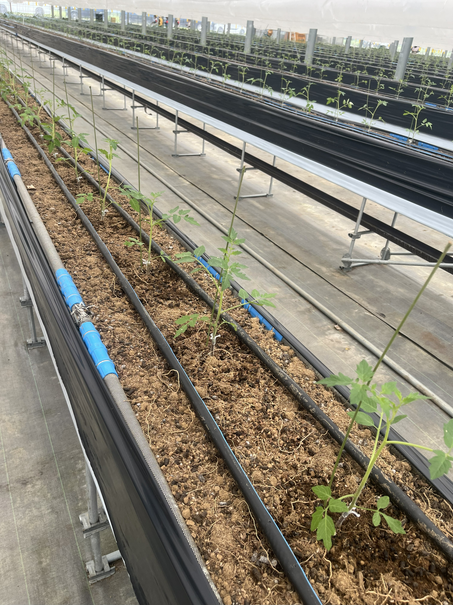
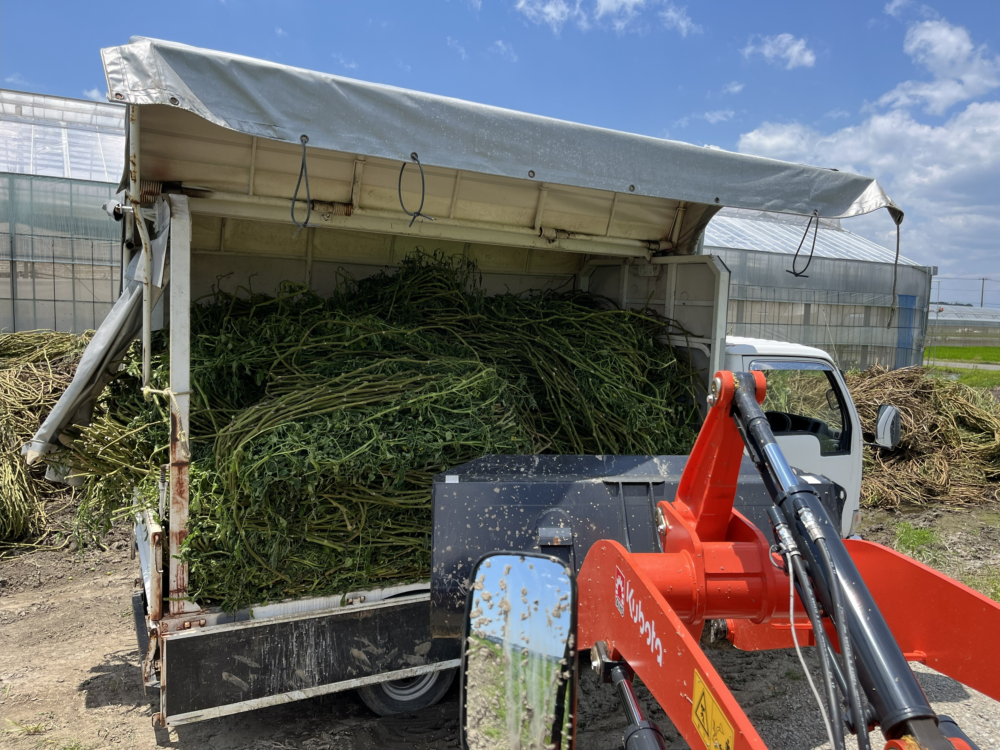
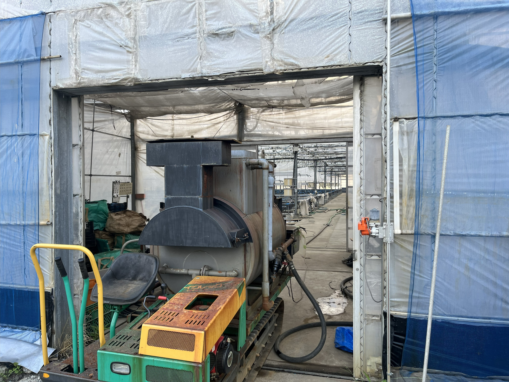
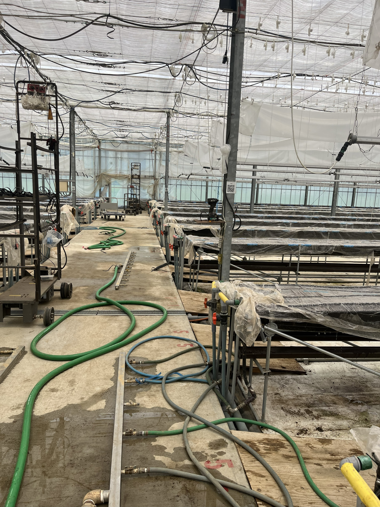

🌱栽培品種・施設規模
🔴 大玉トマト
主要品種
サカタのタネ「かれん」
試験品種
赤玉、UMAGNA RZ F1


栽培面積
1号棟
4,900㎡
2号棟
2,860㎡
小計
7,760㎡

🍒 ミニトマト
主要品種
ヴィルモランみかど「小鈴キング」
試験品種
ライズクワーン番号品種
栽培面積
3号棟
4,700㎡
4号棟
3,540㎡
小計
8,240㎡

総ハウス面積
16,000㎡
（約1.6ヘクタール）
👥スタッフ構成
4名
正社員
12名
栽培スタッフ
6名
海外スタッフ
22名
総スタッフ数
📅年間栽培スケジュール（2025年作）
🌱
7月15日・22日
大玉トマト定植


🌱
7月30日・8月6日
ミニトマト定植
🍅
9月初旬
大玉収穫開始
🍒
9月中旬
ミニ収穫開始
📦
9月〜翌6月
収穫期間
(9〜10ヶ月)
(9〜10ヶ月)
✂️
6月中旬〜7月初
作終わり

🔧
6月末〜7月中旬
改植・熱水消毒


🌿栽培方法の特徴
🏅 特別栽培
環境に配慮した持続可能な農業を実践しています
✅ G-GAP認証取得
適正農業規範（GAP）に基づいた品質管理・安全管理を実施しています
💧 有機液肥使用
有機液肥を用いた潅水システムで、土壌環境を整えています
🛡️ 減農薬栽培
主に銅剤（クプロシールド）を使用し、農薬使用を最小限に抑えています
🏭主要栽培設備
🏗️ ハウス構造
低コスト対抗性ハウス / 高設隔離ベンチ溶液土耕栽培システム
🎛️ 環境制御
オムニアコンチェルト・コンチェルト（統合環境制御システム）
デンソー ProFarm
デンソー ProFarm
🚜 作業車両・機械
高所作業車：タキゲン
低所作業車：タキゲン
多機能収穫台車
薬散カー：有光工業 オートランナー
耕運機：みのる産業
ブロアクリーナー：みのる産業
低所作業車：タキゲン
多機能収穫台車
薬散カー：有光工業 オートランナー
耕運機：みのる産業
ブロアクリーナー：みのる産業
🌡️ 温度・CO2管理
暖房機：ネポン
炭酸ガス発生装置：ネポン
外気導入設備完備
炭酸ガス発生装置：ネポン
外気導入設備完備
☀️ 光・遮熱管理
LED補光：シグニファイ
遮熱剤：誠和アグリカルチャ レディヒート
屋根上散水システム
遮熱剤：誠和アグリカルチャ レディヒート
屋根上散水システム
🎋 誘引システム
ハイワイヤーシステム
誘引ひも：ニフコ
誘引具：タキゲン
誘引ひも：ニフコ
誘引具：タキゲン
🌡️ 保温設備
外周内張：川上産業 エコポカプチ
2重カーテン：誠和
2重カーテン：誠和
🧪 肥料
有機液肥・化成肥料：旭化学工業
📊 データ管理
FarmSystem（グループ独自開発）
作業時間・重量の自動計測システム
作業時間・重量の自動計測システム
📦 選果・出荷
ミニトマト用パッキング装置（グループ独自開発）
サイズ選果機完備
サイズ選果機完備